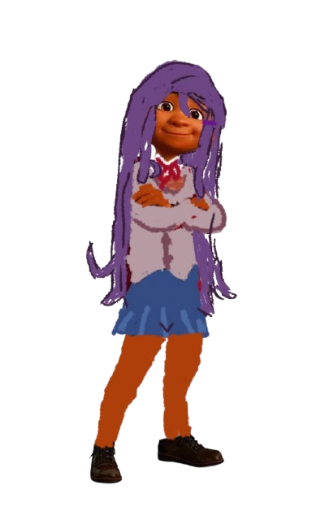

Yuri

Route de Yuri
Vidéo explicative
Yuri est l'une des quatre membres principales du Club de littérature dans Doki Doki Literature Club!. Calme, réservée et intelligente, elle est passionnée par la lecture et l'écriture, notamment les histoires sombres et psychologiques.
Derrière son apparence élégante, Yuri cache une grande fragilité.
Elle souffre de problèmes psychologiques, notamment d'une tendance à l'automutilation, et est très anxieuse et perfectionniste. Elle développe également des sentiments amoureux de plus en plus forts pour le protagoniste.
Dans l'acte 2, son obsession devient de plus en plus intense.
À cause des manipulations de Monika, Yuri perd progressivement la raison et finit par se poignarder devant le protagoniste le jour du festival. Monika réinitialise ensuite le jeu, effaçant les conséquences de sa mort.
Yuri est donc un personnage important, car son histoire montre que les apparences peuvent être trompeuses et révèle la dimension sombre et psychologique de Doki Doki Literature Club!.